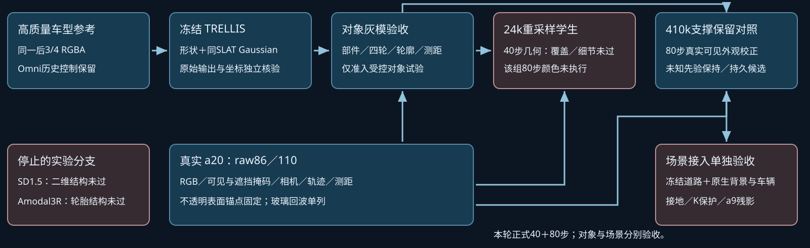

a20：车辆教师与高斯资产对照
2026-11-22 · 删除a9白车，恢复a20黑色皮卡 · 构建raw86／110
TRELLIS提供了更有用的粗车辆先验；保留原生高斯支撑可避免明显细节损失，场景交接仍未验收。

执行与验收
| 实验／检查 | 结果 | 判定 |
|---|
| 二维分支 | 基础SD1.5 inpainting：1候选／20步；道路LoRA关闭 | 真实V/R像素最大变化0；二维结构未过，新增Omni采样0 |
| 独立学生 | 24,235行；正式40步几何 | 缺失域覆盖未过；该组80步颜色未执行 |
| 学生高覆盖 · raw86／110 | 95.54%／95.22% | 固定teacher高置信域中，student Alpha≥.95的比例；门为99% |
| 学生新视图细节 | HF相关 0.028～0.206；能量比 0.254～0.321 | 与同相机512原生教师比较；颜色80尚未执行 |
| 足迹：正前主轴σ中位数 | 教师1.084px；学生初始3.709px／40步3.698px | 同相机、含相同0.3px²低通；初始化已发生低通与斑点化 |
| 支撑保留控制 | 410,080行；真实可见DC 12,865行优化80步 | 全部几何/协方差/不透明度及397,215行未知DC逐位冻结 |
| 未知细节监测 | HF相关≈1，能量比≈1 | 原先验保真；不是本轮学出了未知纹理 |
| 正式预算 | 40步几何＋80步独立观测校正＝120步 | 不同实验组；不把失败组的颜色阶段写成已跑 |
| 短程与恢复 | 20步＋2重放＋1丢弃探针；控制5步＋2重放 | 完整Adam／Python／NumPy／Torch CPU与CUDA RNG恢复通过 |
| 磁盘重载 | 最终控制8视图float／8bit最大差均0 | 最终actor与恢复状态均已取回验真 |
| 场景接入 | 旧行退休的保留车辆RGB/Alpha差为0；新增对象仍有遮挡 | raw86 native11 RGB变化239／245像素；raw110全部K为488像素 |
| 道路与场景优化 | 0步 | 道路、轨迹、相机、环境与其它实例参数冻结；接地和场景未验收 |
二维输入与前置门
实际 SD1.5 条件与唯一输出
 原图、受保护输入、实际遮挡许可、输出。后保险杠圆灯、轮胎及底部碎片未通过二维门；未送入Omni。
原图、受保护输入、实际遮挡许可、输出。后保险杠圆灯、轮胎及底部碎片未通过二维门；未送入Omni。用于 Omni 历史控制与 TRELLIS 的同一车型参考
 模型实际使用对应RGBA。TRELLIS和Omni输入文件SHA相同；官方预处理与采样参数分别记录。
模型实际使用对应RGBA。TRELLIS和Omni输入文件SHA相同；官方预处理与采样参数分别记录。三维教师灰模：同一固定验收门
| 模型／输入 | 全部1030点 mean／P90 | 结构与数值结论 |
| Omni／同一高质量参考（历史） | 9.93／38.02 cm | 测距门未过；保留粗先验 |
| Amodal3R／真实partial＋遮挡掩码 | 8.85／36.01 cm | 轮胎结构与测距未过 |
| TRELLIS-image-large／同一高质量参考 | 4.68／9.08 cm | 对象本体门可用于受控试验；场景绑定另审 |
灰模部件关系
Omni：历史高质量参考控制
 固定框轴修正后的历史资产；本轮未重采样。
固定框轴修正后的历史资产；本轮未重采样。Amodal3R：真实遮挡输入
 输入为真实partial RGB及显式遮挡掩码。轮胎缺失与锥状支撑未通过结构门。
输入为真实partial RGB及显式遮挡掩码。轮胎缺失与锥状支撑未通过结构门。TRELLIS-image-large：同高质量参考
 四轮、双轴、驾驶舱与货厢关系可辨。保留原生成比例；有界配准的统一scale=1.10触上界。
四轮、双轴、驾驶舱与货厢关系可辨。保留原生成比例；有界配准的统一scale=1.10触上界。同相机原生细节对照
合成视图源512×512；Alpha为车辆单层覆盖。联合可见贡献单独验收。
真实可见区域：初始化与80步收益分开
| 真实V阶段 | raw86：RGB L1／HF相关 | raw110：RGB L1／HF相关 |
| 原生成教师 | 0.09180／0.0915 | 0.08855／0.0035 |
| 真实RGB初始化 | 0.03129／0.3987 | 0.04033／0.1047 |
| 80步观测校正 | 0.01880／0.5053 | 0.03632／0.2652 |
原生场景接入：RGB与可见贡献分开
raw110：最终对象单层 RGB
 实际原生高斯光栅化，410080行；包含观测校正与生成先验。
实际原生高斯光栅化，410080行；包含观测校正与生成先验。raw110：删除 a9 后联合 RGB
 同一对象接回冻结道路与背景。车底红灰平面残留仍可见，未晋升场景。
同一对象接回冻结道路与背景。车底红灰平面残留仍可见，未晋升场景。raw110：联合可见贡献 Alpha
 此图表示联合深度排序后的a20贡献；不能代替RGB材质质量。
此图表示联合深度排序后的a20贡献；不能代替RGB材质质量。raw86：删除 a9 后联合 RGB
 固定保留车辆掩码内仍存在变化；未逐相机裁掉新高斯以掩盖问题。
固定保留车辆掩码内仍存在变化；未逐相机裁掉新高斯以掩盖问题。卡点与阶段结论
本轮选择TRELLIS-image-large作为更有用的粗车辆先验。它与Omni历史控制使用同一高质量后3/4参考；Amodal3R使用其真实遮挡接口，输入条件不同。SD1.5唯一结果止于二维门。
24k重采样把位置、协方差、密度与取色共同改变：正前投影主轴σ中位数由1.084增至3.709像素，初始取色还混合约10～11个有效源。颜色训练之前就已有细节损失。清楚的原生高斯输出说明当前油画效果不能作为3DGS表示上限的证据。
支撑保留控制保存了既有未知细节，只优化真实可见外观。真实V的初始化收益与80步收益已分开列出；raw110的HF相关仍只有0.2652，真实可见细节尚未全部通过。
接地检查区分了固定表面与Gaussian覆盖：后右轮处缺少测距支持，前右处存在局部证据冲突。单次俯仰/横滚诊断保留独立版本，未烘入本对象。
真实feature-VJP使旧行退出不再损伤固定保留车辆区域；加入新高斯后仍发生遮挡。后续应针对观测几何、可见性和原生残留处理，不以增加颜色步数代替交接验收。